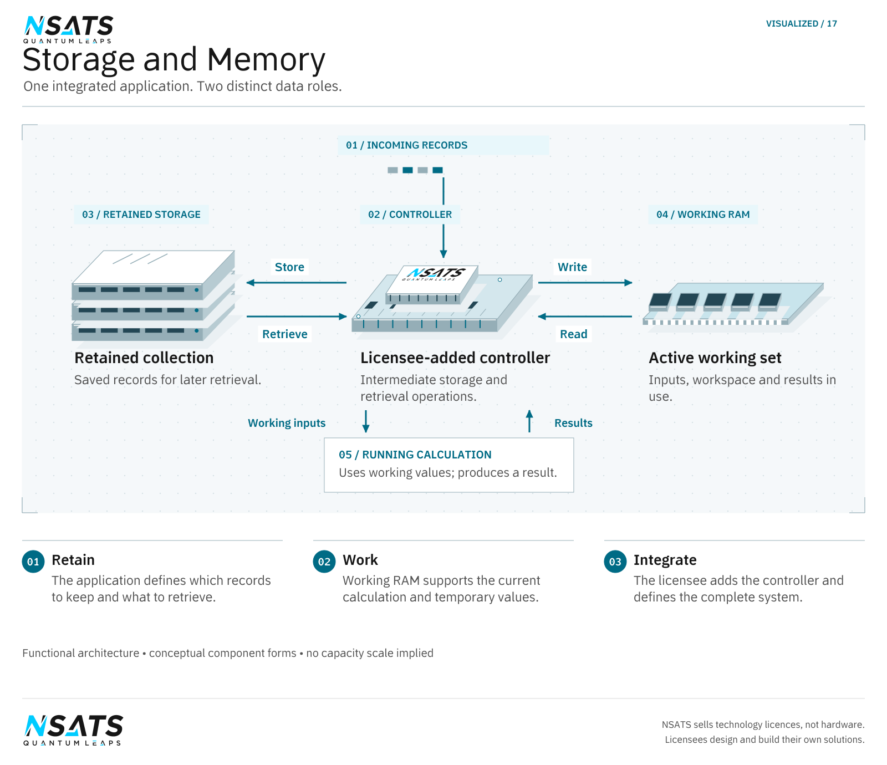

Applications
NSATS technology supports decisions about expanding data centres, delivering data processing and storage services, designing memory and storage equipment, providing backup location information and improving networks. Data centres, data services, component design and networking draw on the Quantum portfolio; Location draws on the separate Geomagnetism portfolio. NSATS sells technology licences, not chips. Its technology helps licensees manufacture their own chips.
Film description
Explore four network-card designs, the quantum-classical processor and classical data input and output. The film compares conventional and equipped networks, then illustrates data moving between connected points around the world.
The 10/15 Gb/s comparison and +50% original-data throughput are illustrative, not measured results. Both physical links remain at 10 Gb/s. Golden dots represent effective data throughput, not physical propagation speed.
How the Quantum technology contributes
NSATS licences enable classical devices to perform operations based on quantum mechanics, at room temperature. The quantum-classical bus carries electrical signals with more than two states, beyond binary 0 and 1, enabling faster processing, data transfer and decision making within a quantum-classical electronic device. Through a specially designed classical chipset or controller that the licensee adds, the same data needs fewer drives and less memory; the drives and RAM remain ordinary classical storage. This is not a software-only upgrade or a drop-in change; integration is part of the licensee’s design.
Data centres
Quantum technology — Capacity, power and cooling for facility operators
Adding storage and working memory means planning for the equipment and the power, cooling and space that support it. For a data-centre operator, the decision is how much useful capacity the facility can deliver within those constraints.
NSATS technology increases effective storage capacity and reduces the installed memory needed for the same working data. The capacity increase depends on the drive, how the licensee uses the technology and where its functions sit in the design. Computer buses send and retrieve classical data encoded using quantum-mechanical logic faster, and the chipsets run with lower heat than conventional computing. The technology operates at room temperature, without super-cooling.
With fewer drives and less memory holding the same data, and chipsets that run with lower heat, there are fewer storage devices to buy, power, cool, house and replace each time capacity is added. Whether that becomes a net saving for a facility is settled by comparing total cost for the same workload and service level, counting the added controllers, the licence, integration and migration. The same comparison shows the environmental effect: fewer storage devices mean less equipment to manufacture and later retire, while the carbon effect depends on the electricity supply and lifecycle choices.
Operators that design their own storage or server equipment can license the technology directly; others can raise it with the manufacturers that build their equipment.
Data processing and storage
Quantum technology — Service economics for hosting and cloud providers
Web hosting, cloud storage and managed infrastructure providers must fund the equipment that stores and serves customer data as their services grow. NSATS technology enables the same customer data to be held on fewer drives, with less installed memory for the same working data and faster sending and retrieval. The capacity gain depends on the drive and the licensee’s design.
Holding the same customer data on fewer drives and less memory means fewer storage devices to buy, power, cool and maintain for the service, now and at each later addition of capacity. The net effect on the cost of the service is settled on total cost for the same service level, including the controller, licence, integration and migration.
Archive, backup and object-storage services benefit directly from increased effective storage capacity. For hosted applications and databases, measure processing, memory access and network performance together with capacity. Migration planning should preserve the provider’s service levels and its arrangements for backup, replication, recovery and data integrity.
Providers that design their own equipment can license directly; others can raise the technology with their equipment manufacturers. Replication between the provider’s own sites suits the paired-endpoint arrangement under Routers and networking.



Memory and storage
Quantum technology — Integration for component and system manufacturers
Memory and storage manufacturers choose how much data a product holds and how quickly it exchanges that data with the rest of a system. NSATS licences enable manufacturers to incorporate quantum-inspired gates, processors, quantum-classical buses, controllers and interconnects into their own designs.
The technology provides more effective storage from the same physical drive, more effective capacity in RAM and faster exchange between memory and processors. The capacity increase depends on the drive, how the manufacturer uses the technology and where the licensed functions sit in its design. The physical storage resource remains unchanged; its effective capacity increases.
For RAM, faster operation means that computer buses send and retrieve classical data encoded using quantum-mechanical logic faster. NSATS’s gate designs also increase chipset speed. Storage capacity, working-memory capacity and processing performance give manufacturers distinct choices to assess across their product ranges.
Location
Geomagnetism technology — A backup position source from Earth’s magnetic field
Geomagnetic positioning determines location from Earth’s magnetic field, a physical input present in the environment. It does not rely on live satellite positioning signals, so it gives equipment a backup position source where those signals are unavailable or unsuitable. The licensee’s system determines when and how it combines or changes between position sources.
An additional location input supports tasks such as associating inspection findings with a place or showing equipment position to an operator. Its contribution to continuity depends on the implemented method, the operating environment and the location information the task needs. Underground, surface, airborne, underwater, indoor and dense urban use are intended directions. Sending a position to a remote recipient is a separate communications function in the licensee’s system.
Routers and networking
Quantum technology — Data transfer, post-quantum security and reliable operation
When sites exchange large datasets, transfer time can hold up the work that depends on them. Compatible chip-containing quantum-classical network cards at both ends of a connection move the complete exchange faster. The gain comes from processing at the equipped ends; the ordinary routers and links between them stay as they are. The arrangement supports long-distance transfer over wireless, optical and wired links. Response time for an individual request is a separate measure.
For an organisation equipping both ends, an illustrative use is transferring a dataset between its data centres. Router and network-equipment manufacturers can also incorporate the bus into their own equipment for faster internal transfer, according to their design.
Post-quantum security does not come from the network cards. It uses classical computing methods inspired by quantum mechanics, built into the licensee’s chips and systems, to protect data and communications against the future threat quantum computing poses to today’s security.
Reliable operation requires evaluation of the implemented network. Sustained throughput determines whether scheduled transfers finish in time; consistent response time matters to interactive services. Check the integrity of received data and the behaviour after an interruption to establish whether data must be sent again, how much work must be repeated and how quickly the service recovers.
More application pages
Continue through Quantum applications, Geomagnetic positioning applications or Industrial automation for other uses within each portfolio and within equipment.
Next step
Start with the task, the equipment involved and the operating constraint that matters to the decision. The licensing preparation guide sets out the information to bring to a discussion.